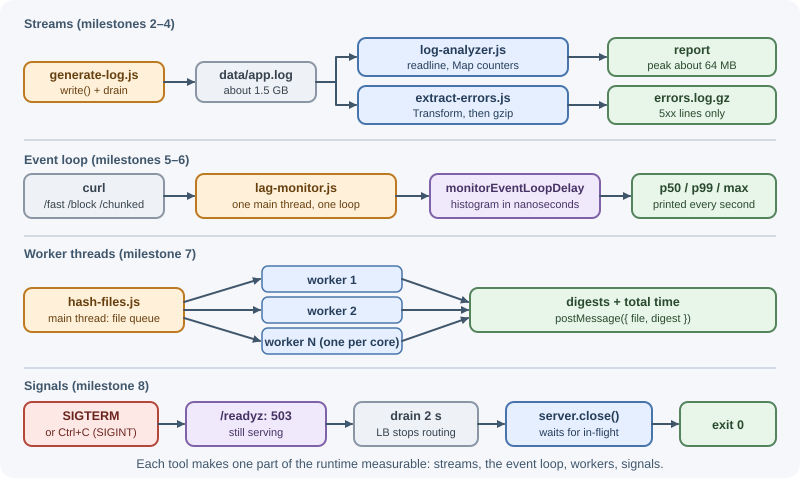
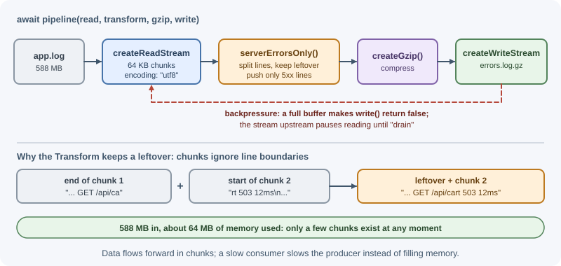
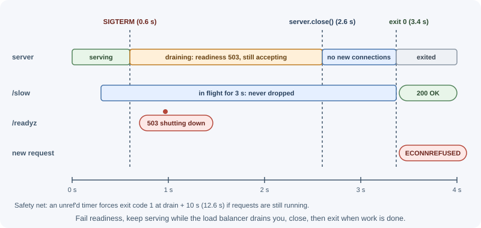

Project: Node Internals Lab¶
In this project you build four small command-line tools, each designed to
make one part of the Node.js runtime visible: a log analyzer that processes
a file larger than your memory budget with streams, an event-loop lag
monitor that shows exactly what blocking code does to other requests, a
file hasher that compares the main thread with worker threads, and an HTTP
server that shuts down gracefully on SIGTERM. Reading about the event
loop and streams is useful; measuring them on your own machine is what
makes the ideas stick.
What you'll learn¶
- Read and write large files with constant memory using streams and
pipeline()(buffers and streams, file system, path, and OS). - Respect backpressure by checking
write()and waiting fordrain(buffers and streams). - Measure event-loop delay with
monitorEventLoopDelayand see blocking code delay unrelated requests (the event loop). - Break long CPU work into slices with
setImmediate(asynchronous programming). - Run CPU-bound work in parallel with a small worker pool, and learn when that does not help (worker threads, child processes, and cluster).
- Handle
SIGTERMandSIGINT, fail readiness, drain, and exit cleanly (process, environment variables, and configuration, the http module). - Measure memory and time instead of guessing (errors, debugging, and performance).
Prerequisites¶
- Node.js, Active LTS (22 or newer). The tools use
fetch,node:timers/promises,os.availableParallelism(), and ES modules. Check withnode --version; see installing Node.js and managing versions. - About 2 GB of free disk space for the generated log file.
- A terminal with
curl. In Windows PowerShell, typecurl.exe, because plaincurlis an alias forInvoke-WebRequest. - For the
SIGTERMmilestone: Linux, macOS, WSL, or Docker. Windows cannot deliverSIGTERMto another process;Ctrl+C(which sendsSIGINT) works everywhere. - Read first: runtime and architecture, the event loop, and modules: CommonJS and ES modules.
Architecture¶
The lab is four independent tools. Each one exercises a different part of the runtime:

The key mechanism of the stream tools is backpressure: data flows forward in chunks, and a slow consumer makes the producer pause instead of filling memory.

The graceful-shutdown server follows a fixed sequence when the platform asks it to stop:

Starting structure¶
node-internals-lab/
├── package.json "type": "module" and npm scripts
├── scripts/
│ ├── generate-log.js writes a large access log (milestone 2)
│ └── generate-blobs.js writes random binary files (milestone 7)
├── tools/
│ ├── log-analyzer.js stream + readline analyzer (milestone 3)
│ ├── extract-errors.js Transform + gzip pipeline (milestone 4)
│ ├── lag-monitor.js HTTP server + loop-delay monitor (milestones 5–6)
│ ├── hash-file.js hashes one file
│ ├── hash-worker.js worker thread entry point
│ ├── hash-files.js main thread vs worker pool (milestone 7)
│ └── graceful-server.js SIGTERM handling (milestone 8)
└── data/ generated files (add to .gitignore)
Milestones¶
Milestone 1: Set up the lab¶
Goal: an ES-module project with one npm script per tool.
Read first: modules: CommonJS and ES modules, npm and package management.
Steps
- Create the folder and run
npm init -y. - Add
"type": "module"so.jsfiles useimport. - Add scripts for each tool and a
.gitignorecontainingdata/andnode_modules/.
{
"name": "node-internals-lab",
"version": "1.0.0",
"private": true,
"type": "module",
"scripts": {
"gen:log": "node scripts/generate-log.js data/app.log 30000000",
"analyze": "node tools/log-analyzer.js data/app.log",
"errors": "node tools/extract-errors.js data/app.log data/errors.log.gz",
"lag": "node tools/lag-monitor.js",
"gen:blobs": "node scripts/generate-blobs.js data/blobs 8 64",
"hash": "node tools/hash-files.js data/blobs",
"hash:workers": "node tools/hash-files.js data/blobs --workers",
"server": "node tools/graceful-server.js"
}
}
The project needs no dependencies: everything comes from Node.js core modules.
Done when:
node --versionprintsv22.or later.npm runlists the eight scripts.
Milestone 2: Generate a multi-gigabyte log with backpressure¶
Goal: write tens of millions of lines without the writer's memory growing.
Read first: buffers and streams, file system, path, and OS.
Steps
- Open a write stream with
createWriteStream(file). - Build one line per iteration in the format
2026-11-07T10:00:00.000Z GET /api/cart 200 123ms. - Call
out.write(line). When it returnsfalse, the stream's internal buffer is full:await once(out, "drain")before writing more. - Call
out.end()and wait for"finish".
// scripts/generate-log.js (core loop)
import { createWriteStream } from "node:fs";
import { once } from "node:events";
const out = createWriteStream(file);
for (let i = 0; i < total; i++) {
const line = `${time} ${pick(methods)} ${pick(paths)} ${pick(statuses)} ${ms}ms\n`;
// write() returns false when the buffer is full: wait for "drain"
if (!out.write(line)) await once(out, "drain");
}
out.end();
await once(out, "finish");
Use a status list that includes 500 and 503 so later milestones have
errors to find. Without the drain check the loop still works, but every
line waits in memory until the disk catches up, and memory grows with the
file size.
Done when:
node scripts/generate-log.js data/app.log 2000000printswrote 2,000,000 lines to data/app.logand the file is about 98 MB (about 49 bytes per line).npm run gen:log(30 million lines) produces a file of about 1.5 GB. Expect it to take a few minutes; 12 million lines took 66 seconds on the test machine.
Milestone 3: Analyze the log with constant memory¶
Goal: count lines by status and path for a file larger than you would ever load into memory.
Read first: buffers and streams,
asynchronous programming (the for await
section).
Steps
-
First, see why the obvious approach fails. Try reading the whole file:
import { readFile } from "node:fs/promises"; const text = await readFile("data/app.log", "utf8"); // whole file as one stringOn a file larger than about 512 MB this throws
RangeError: Invalid string length: V8 caps strings atbuffer.constants.MAX_STRING_LENGTHcharacters (536,870,888 in Node.js 22). Smaller files load, but memory grows with the file. -
Read the file as a stream and split it into lines with
node:readline, which also handles lines split across chunks. - Update two
Mapcounters per line. - Sample
process.memoryUsage().rssevery 100 ms to record peak memory.
// tools/log-analyzer.js (core loop)
import { createReadStream } from "node:fs";
import { createInterface } from "node:readline";
const rl = createInterface({ input: createReadStream(file), crlfDelay: Infinity });
for await (const line of rl) {
if (line === "") continue;
const [, , path, status] = line.split(" ");
byStatus.set(status, (byStatus.get(status) ?? 0) + 1);
byPath.set(path, (byPath.get(path) ?? 0) + 1);
}
// TODO: print the line count, time, peak RSS, 5xx total, and top 3 paths
Done when: npm run analyze prints a report like this (counts are
random; the shape and the flat memory are what matter):
lines: 12,000,000
time: 10.8 s
peak memory: 64 MB (RSS)
5xx responses: 2,001,694
Peak memory stays roughly the same (around 60–100 MB) whether the file is 100 MB or 1.5 GB. On the test machine a 98 MB file peaked at 67 MB and a 588 MB file at 64 MB.
Milestone 4: A Transform and gzip pipeline¶
Goal: copy only server errors (5xx) into a compressed file, using a
custom Transform stream inside pipeline().
Read first: buffers and streams (Transform
streams, pipeline, backpressure).
Steps
- Open the input with
{ encoding: "utf8" }so chunks are strings that never split a multi-byte character. - Write a
Transformthat splits each chunk on"\n", keeps the last, possibly incomplete piece inleftoverfor the next chunk, and pushes only lines whose status starts with5. - Handle
leftoveronce more inflush(), which runs after the last chunk. - Connect
read → transform → createGzip() → writewithpipeline()fromnode:stream/promises. It handles backpressure across all four streams and destroys all of them if one fails.
// tools/extract-errors.js (the tricky part)
function serverErrorsOnly() {
let leftover = ""; // a chunk can end in the middle of a line
return new Transform({
transform(chunk, encoding, callback) {
const lines = (leftover + chunk).split("\n");
leftover = lines.pop();
const errors = lines.filter((line) => line.split(" ")[3]?.startsWith("5"));
if (errors.length > 0) this.push(errors.join("\n") + "\n");
callback();
},
flush(callback) {
if (leftover.split(" ")[3]?.startsWith("5")) this.push(leftover + "\n");
callback();
},
});
}
await pipeline(
createReadStream(input, { encoding: "utf8" }),
serverErrorsOnly(),
createGzip(),
createWriteStream(output),
);
Done when:
npm run errorsprintskept N linesandwrote data/errors.log.gz, whereNequals the5xx responsescount from milestone 3.-
This check prints the same count and
true:node -e "const z=require('zlib'),fs=require('fs');const l=z.gunzipSync(fs.readFileSync('data/errors.log.gz')).toString().split('\n').filter(Boolean);console.log(l.length,l.every(x=>x.split(' ')[3].startsWith('5')))"For a 2,000,000-line file the test run kept 333,226 lines in a 2.3 MB gzip file.
Milestone 5: Watch blocking code freeze the event loop¶
Goal: see, in numbers, that one synchronous request delays every other request.
Read first: the event loop, building HTTP servers with the http module.
Steps
- Create a
node:httpserver with three routes:/fastanswers immediately,/block?ms=800runs a busy loop for 800 ms, and/chunked?ms=800comes in milestone 6. - Enable a loop-delay histogram and print it every second, then reset it.
// tools/lag-monitor.js (monitor and blocking route)
import { monitorEventLoopDelay } from "node:perf_hooks";
const histogram = monitorEventLoopDelay({ resolution: 10 });
histogram.enable();
setInterval(() => {
const ms = (ns) => (ns / 1e6).toFixed(1); // the histogram reports nanoseconds
console.log(`loop delay p50=${ms(histogram.percentile(50))}ms ` +
`p99=${ms(histogram.percentile(99))}ms max=${ms(histogram.max)}ms`);
histogram.reset();
}, 1000);
function blockFor(ms) {
const end = Date.now() + ms;
while (Date.now() < end) {} // nothing else can run until this returns
}
- Start it with
npm run lag. In a second terminal start a slow request, and in a third time a fast one while the slow one runs:
curl "http://localhost:3000/block?ms=800"
curl -s -o /dev/null -w "%{time_total}s\n" http://localhost:3000/fast
Done when:
- The
/fastrequest sent during/blocktakes about as long as the block (747 ms in the test run, instead of a few milliseconds). - The monitor prints a line such as
loop delay p50=15.7ms p99=813.7ms max=813.7msfor that second.
At idle the numbers sit near the 10 ms sampling resolution (a little
higher on Windows, whose timers tick about every 15.6 ms). The jump in
p99 and max is the signal.
Milestone 6: Keep the loop responsive by slicing work¶
Goal: do the same 800 ms of CPU work without freezing other requests.
Read first: the event loop (splitting long work into chunks), asynchronous programming.
Steps
- Add
/chunked?ms=800, which does the work in 10 ms slices. - After each slice,
awaitsetImmediate()fromnode:timers/promisesso timers, I/O, and other requests can run.
import { setImmediate as yieldToLoop } from "node:timers/promises";
async function workInSlices(ms) {
const end = Date.now() + ms;
while (Date.now() < end) {
blockFor(Math.min(10, end - Date.now()));
await yieldToLoop(); // let other callbacks run between slices
}
}
Done when:
- A
/fastrequest sent during/chunked?ms=800returns in a few milliseconds (8 ms in the test run), while/chunkeditself still takes about 800 ms. - The monitor's
maxstays near 20 ms during/chunked.
Slicing keeps the server responsive but does not make the work faster or use more cores. For that, use worker threads (next milestone).
Milestone 7: Hash files with a worker pool¶
Goal: compare hashing on the main thread with a pool of worker threads, and find out when workers help.
Read first: worker threads, child processes, and cluster.
Steps
- Generate test data:
npm run gen:blobswrites 8 files of 64 MB of random bytes. - Write
hashFile(file, algorithm): stream the file and callhash.update(chunk)for each chunk, thenhash.digest("hex"). - Main-thread mode: hash the files one after another.
- Worker mode: start
min(files, os.availableParallelism())workers and send each one the next file path when it finishes the previous one. - Print the first 16 hex characters of each digest and the total time.
// tools/hash-worker.js
import { parentPort, workerData } from "node:worker_threads";
import { hashFile } from "./hash-file.js";
parentPort.on("message", async (file) => {
try {
parentPort.postMessage({ file, digest: await hashFile(file, workerData.algorithm) });
} catch (error) {
parentPort.postMessage({ file, error: error.message });
}
});
// tools/hash-files.js (pool skeleton)
const worker = new Worker(new URL("./hash-worker.js", import.meta.url), {
workerData: { algorithm },
});
const giveNextFile = () => {
const file = queue.shift();
if (file) return worker.postMessage(file);
worker.terminate();
// TODO: resolve the promise when the last worker has finished
};
worker.on("message", (result) => { results.push(result); giveNextFile(); });
worker.on("error", reject);
giveNextFile();
Done when:
- Both modes print identical digests.
- You can explain these timings from the test machine (8 cores):
8 files, sha256, main thread: 0.72 s
8 files, sha256, 8 workers: 0.67 s
8 files, sha3-512, main thread: 5.48 s
8 files, sha3-512, 8 workers: 1.36 s
SHA-256 is hardware-accelerated on most CPUs, so the job is limited by reading the files and workers barely help. SHA3-512 is much more CPU intensive, so spreading it across cores is about four times faster. Measure before adding workers.
Milestone 8: Shut down gracefully on SIGTERM¶
Goal: when the platform stops the process (a deploy, docker stop,
Kubernetes), finish in-flight requests instead of dropping them.
Read first: process, environment variables, and configuration (signals and graceful shutdown), building HTTP servers with the http module.
Steps
- Count in-flight requests: increment on each request, decrement on the
response's
"close"event. - Add
/readyz(200 normally, 503 while shutting down) and a/slowroute that takes 3 seconds. - On
SIGTERMorSIGINT: fail readiness, keep serving for a short drain delay so the load balancer notices, then callserver.close(), which stops new connections and waits for in-flight requests. - Exit with code 0 when
close()calls back. Start an unref'd timer that forcesprocess.exit(1)if something hangs.
// tools/graceful-server.js (shutdown sequence)
async function shutdown(signal) {
if (shuttingDown) return;
shuttingDown = true; // /readyz now answers 503
setTimeout(() => {
server.closeAllConnections();
process.exit(1); // safety net: never hang a deploy
}, DRAIN_DELAY_MS + 10_000).unref();
await sleep(DRAIN_DELAY_MS); // keep serving while the load balancer drains us
// close() waits for in-flight requests; since Node.js 19 it also closes idle keep-alive sockets
server.close((error) => process.exit(error ? 1 : 0));
}
process.on("SIGTERM", () => shutdown("SIGTERM"));
process.on("SIGINT", () => shutdown("SIGINT"));
Done when (Linux, macOS, or WSL):
- Start the server:
npm run serverprints its process ID. - In a second terminal start a slow request:
curl http://localhost:3000/slow. - Within a second, send
kill -TERM <pid>. curl http://localhost:3000/readyzduring the drain delay printsshutting downwith status 503.- The slow request still completes with
slow request finished, and the server logs:
SIGTERM: readiness now fails, 1 request(s) in flight
closing server, 1 request(s) still running
all requests finished, exiting
echo $?in the server's terminal prints0, and new requests fail with "connection refused".
On Windows, press Ctrl+C in the server's terminal instead of kill; the
same handler runs for SIGINT.
Stretch goals¶
- Process the log in parallel: split the file into byte ranges, give each range to a worker, and handle lines that cross range boundaries.
- Expose the loop-delay histogram as a
/metricsendpoint and graph it. - Profile
/blockwithnode --cpu-prof tools/lag-monitor.jsand open the.cpuprofilefile in Chrome DevTools. - Replace the hand-written pool with a library such as Piscina and compare the code.
- Cancel the analyzer cleanly on
Ctrl+Cwith anAbortControllerpassed tocreateReadStream. - Run the graceful server in a container and stop it with
docker stop, which sendsSIGTERMand thenSIGKILLafter a grace period; see Docker.
Troubleshooting¶
| Symptom | Cause | Fix |
|---|---|---|
SyntaxError: Cannot use import statement outside a module |
package.json has no "type": "module" |
Add it, or rename the files to .mjs |
| The generator's memory keeps growing | write()'s return value is ignored, so lines pile up in the buffer |
if (!out.write(line)) await once(out, "drain") |
RangeError: Invalid string length |
The whole file was read into one string | Stream it with createReadStream and readline |
| Counts are slightly off or the last line is missing | Lines split across chunks were dropped or counted twice | Keep a leftover in the Transform and handle it in flush(), or use readline |
Error: listen EADDRINUSE: address already in use :::3000 |
Another server (often an earlier run) holds the port | Stop it, or run with PORT=3001 |
| Workers are not faster | The work is limited by I/O, not CPU (SHA-256 with hardware support) | Measure first; workers help only CPU-bound work, such as --algorithm=sha3-512 |
Cannot find module .../hash-worker.js |
The worker path was resolved from the current directory | Use new URL("./hash-worker.js", import.meta.url) |
kill -TERM or Stop-Process ends the server without the shutdown logs |
Windows terminates the process instead of delivering SIGTERM |
Use Ctrl+C (SIGINT) on Windows, or test in WSL or Docker |